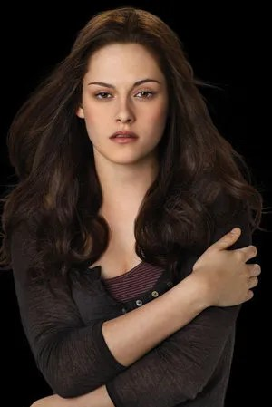
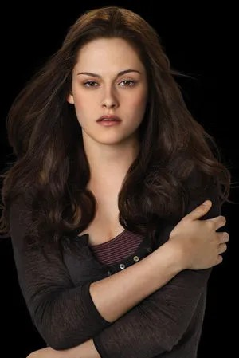

key traits: “Fair-skinned," "long, straight, dark brown hair," "chocolate brown eyes," "face is heart-shaped [...] with a widow’s peak," "large, wide-spaced eyes, prominent cheekbones, a thin nose," "a narrow jaw with a pointed chin," and "lips [...] a bit too full for her jaw line."
Bella's Lullaby by Carter Burwell
Born September 13 1987
From Forks Washington
Height- 5’4
Changed at 18 on september 11 2006
Special Ability-Mental Shield
 
